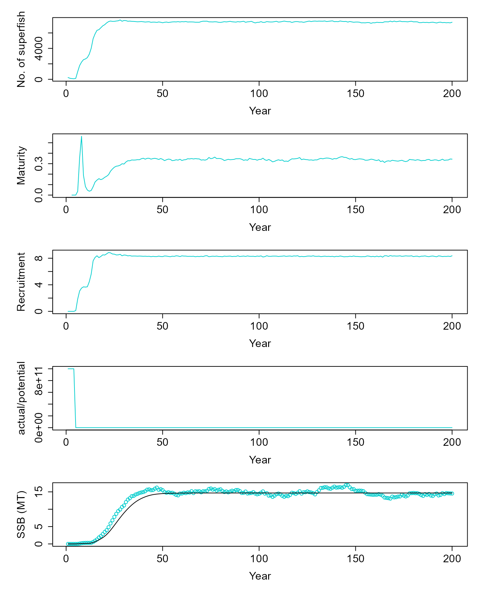
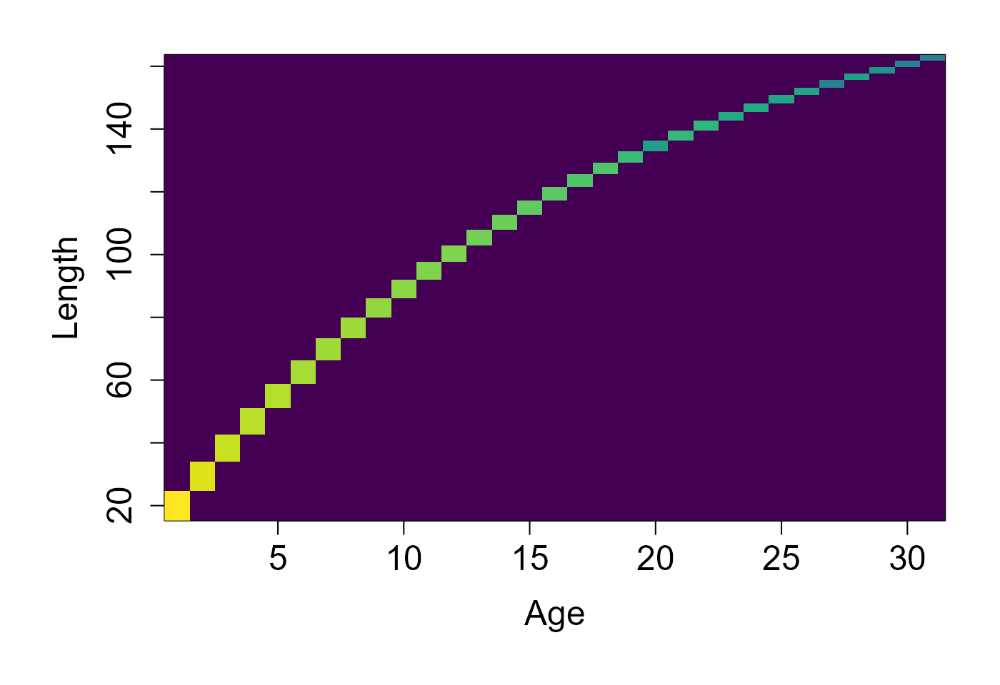
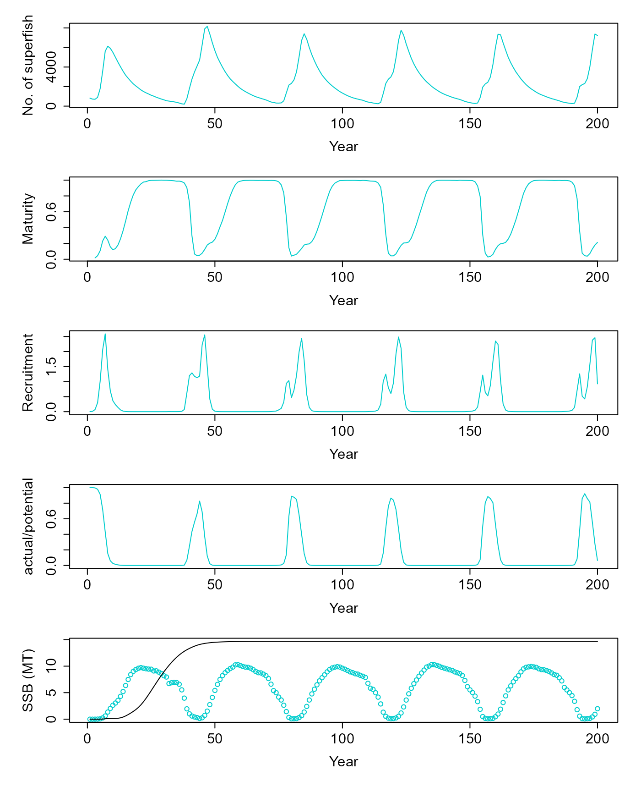
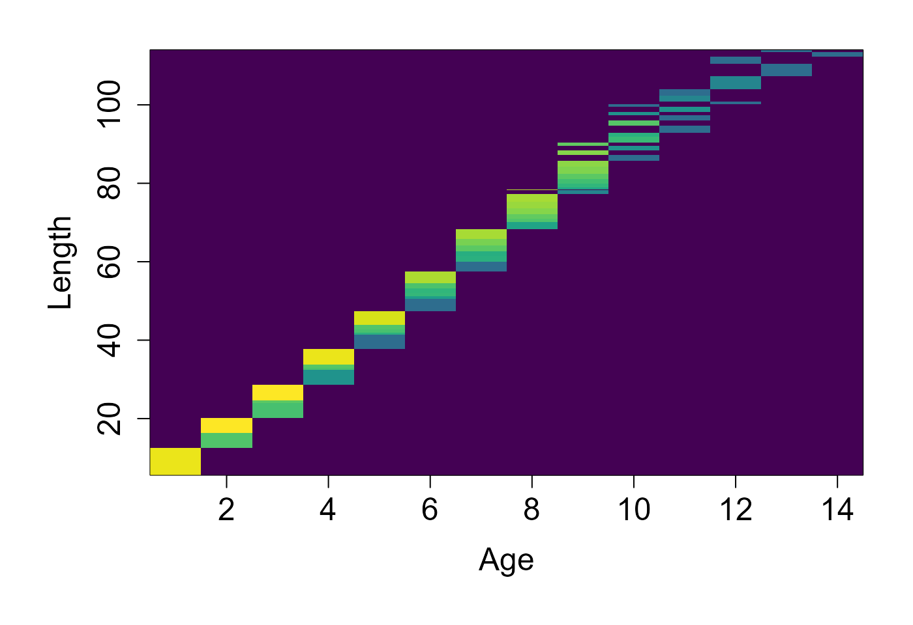

Simulating a fish population without fishing
Jaideep Joshi
13 Jan 2024
unfished_population_stock.RmdBefore we start with the hands-on code, a short orientation:
- Goal: build a prototype Fish, use it to create a Stock, and run short unfished simulations to inspect equilibrium behaviour.
- Output you will inspect: time-series of SSB/TSB, recruitment, maturity and an age×length distribution snapshot.
- Run time: the examples use modest agent counts (1000 superfish) and short horizons (200 years) and should be quick on a modern laptop; increasing realism (smaller superfish_size, more runs) increases CPU/time.
Create a fish
A population is a collection of fish. Therefore to create a population, we first create a fish. This fish will be used a prototype to construct the population.
Here, we create a fish and set some parameters:
params_file = here::here("params/cod_params_dankel22.ini")Let us set parameters that allow us to reproduce the Dankel et al XXXX model.
fish = new(Fish, params_file)
fish$par$Bhalf = 3.65e8
fish$par$growth_model_name = "Dankel22"
fish$par$maturation_model_name = "Dankel22"
fish$par$mortality_model_name = "Dankel22"
fish$par$recruitment_model_name = "BevertonHoltDirect"
fish$init(1.93e3, 5.61)
fish$par$print()
fish$get_state()## [1] 0.00000000 1.00000000 0.00000000 1.00000000 19.97761768 0.06654594Notes on the Fish prototype and parameters
- Fish objects encapsulate an individual (or, in practice, a “superfish”) life-history. Important fields you will commonly inspect or modify from R:
- age, length, weight, t_birth — the basic state variables.
- par — a FishParams object containing biological parameters (r0, Bhalf, Mspawning, s0, growth/maturation/mortality model names, etc.). These parameters drive growth, maturation, mortality and recruitment functions implemented in C++.
- trait_variances, trait_scalars, trait_names — used by the trait-inheritance and evolutionary parts of the model (offspring inherit parental trait means plus normal noise).
- Typical workflow: create a Fish, tune
fish$parfields to choose a growth/maturation/recruitment model and numeric parameter values, then callfish$init(tsb, temp)to set the initial physiological state consistent with environmental conditions. - Choosing models:
- Dankel-like / empirical: select growth_model_name and maturation_model_name values that point to fitted empirical curves in the codebase (e.g., “Dankel22”).
- Bioenergetic: tune s0 and related parameters so growth and reproduction come from mechanistic energy-budget rules.
- Always call
fish$par$print()after modifying params — it helps to verify that intended values were applied.
Create a population
The constructor for the population requires a Fish object as an argument. This fish object will be used as a prototype to construct all fish in the population. You can create a fish population as follows:
pop = new(Stock, fish)
pop$readParams(params_file, F)## [1] 0Stock, superfish_size and units
- Stock stores the population state in a std::vector
(exposed as pop$fishes in C++). The Stock constructor takes a prototype Fish (proto_fish) which is copied to initialize new recruits and the initial population. - superfish_size: each Fish instance represents superfish_size real individuals. This scaling reduces computational load: e.g., superfish_size = 1e6 means each simulated agent stands for one million fish in population metrics.
- Units and presentation: biomass summary functions (calcSSB, calcTSB) return values in the model’s mass units. In this vignette we divide by 1e9 before plotting to obtain numbers on a convenient scale (labelled “MT” in prior plots). Always be mindful of unit conversions when comparing with external datasets or other model implementations.
- Practical rule of thumb: reduce superfish_size to lower discretization noise (more simulated agents) but expect higher CPU/time. Increase it when you want faster exploratory runs.
Setting population parameters
Population parameters can be set in the same way as fish parameters, using the par object in the population
Two parameters are important:
-
n- Superfish size. Since the population can have billions of fish, we do not simulate each individual fish. Rather, each “Fish” represents a group ofnactual fish. This collection is called “Superfish”. Reducing this parameter will necessitate simulating more agents in the model, which will reduce noise but also take more computational time. -
Bhalf- This is a parameter that controls density dependent recruitment.
Practical guidance and sanity checks:
- Superfish size: choose a value that balances stochastic noise and runtime. Typical working values in these vignettes are 1e6–5e6. If you see large step-changes in outputs between years, consider increasing superfish_size (fewer agents) for speed or decreasing it (more agents) to reduce discreteness noise.
- Bhalf and recruitment: Bhalf sets the SSB scale where density dependence halves recruitment. If SSB and recruitment appear uncoupled (very low sensitivity), verify Bhalf is within the same order of magnitude as observed SSB in the model (inspect v$ssb after a run). For debugging, temporarily set Bhalf very large (weak density dependence) or very small (strong density dependence) to confirm expected qualitative behaviour.
- Reproducibility: the Stock uses C++ RNGs internally. Use multiple replicates with different seeds to assess stochastic spread; for debugging, run shorter horizons and inspect diagnostics (nfish, nr, dr).
pop$superfish_size = 2e6 # Each superfish contains so many fishWe can also set the management parameters for a population:
- Harvest proportion - the proportion of fish that are allowed to be harvested every year
- Minimum size limit - the size below which fish cannot be harvested
# pop$set_harvestProp(0) # Harvest
# pop$set_minSizeLimit(45) # Only fish above 45 cm length can be harvestedInitialising a population
By default, a population contains no fish. We must initialize the population with specified number of superfish.
pop$init(1000, 0, 5.61) # initialize the population with 1000 agents (superfish)We can also peek at the state of the population. The state of the population is simply a dataframe consisting of the state of each superfish in the population.
d = pop$get_state()
head(d)## t.birth age isMature isAlive length weight flag
## 1 0 1 FALSE TRUE 19.97762 0.06654594 0
## 2 0 1 FALSE TRUE 19.97762 0.06654594 0
## 3 0 1 FALSE TRUE 19.97762 0.06654594 0
## 4 0 1 FALSE TRUE 19.97762 0.06654594 0
## 5 0 1 FALSE TRUE 19.97762 0.06654594 0
## 6 0 1 FALSE TRUE 19.97762 0.06654594 0Simulating an unfished population
We can simulate a population by continuously updateing it. Each update performs 1 year of simulation, implementing the processes of maturation, growth, mortality, and reproduction for each fish in the population.
For example, let is simulate a population for 200 years.
# pop$verbose = T
# nsteps = 200 # Let's simulate for 200 years
# nfish = numeric(nsteps) # Let's keep track of the number of superfish
# nfish[1]=1000 # Since we initialized the population with 1000 superfish
# cnames = pop$colnames
# dat = data.frame(matrix(ncol=length(cnames), nrow=0))
# colnames(dat) = cnames
# for (i in 1:nsteps){
# v = pop$update(5.61) # Update all fish over 1 year
# dat[i,] = v # some book-keeping
# nfish[i] = pop$nfish()
# }
v = pop$equilibriate_without_fishing(5.61) |>
matrix(nrow=200, byrow=T) |>
as.data.frame() |>
setNames(c("ssb", "tsb", "maturity", "nr", "dr", "nfish"))
d = pop$get_state()
dist = table(d$age, d$length)
par(mfrow = c(5,1), mar=c(5,5,1,1), oma=c(1,1,1,1), cex.lab=1.5, cex.axis=1.5)
plot(v$nfish~seq(1,200,1), ylab="No. of superfish", xlab="Year", type="l", col=c("cyan3"))
plot(v$maturity~seq(1,200,1), ylab="Maturity", xlab="Year", type="l", col=c("cyan3"))
plot(I(v$nr/1e9)~seq(1,200,1), ylab="Recruitment", xlab="Year", type="l", col=c("cyan3"))
plot(v$dr~seq(1,200,1), ylab="actual/potential", xlab="Year", type="l", col=c("cyan3"))
res = simulate(0, 45, F)
matplot(cbind(v$ssb/1e9, res$summaries$SSB[1:200]/1e9), ylab="SSB (MT)", xlab="Year", col=c("cyan3", "black"), lty=1, type=c("p","l"), pch=1)
par(mfrow = c(1,1), mar=c(5,5,1,1), oma=c(1,1,1,1), cex.lab=1.5, cex.axis=1.5)
image(x=as.numeric(rownames(dist)), y = as.numeric(colnames(dist)), z=log(1+3*log(1+dist)), col=scales::viridis_pal()(100), xlab="Age", ylab="Length")
Bioenergetic model
Now, let’s simulate the bioenergetic model and compare the results with the model of Dankel et al.
library(fisheRy)
params_file = here::here("params/cod_params.ini")
fish = new(Fish, params_file)
fish$par$s0 = 0.0192
pop = new(Stock, fish)
pop$readParams(params_file, F)## [1] 0
pop$superfish_size = 1e6 # Each superfish contains so many fish
v = pop$equilibriate_without_fishing(5.61) |> matrix(nrow=200, byrow=T) |> as.data.frame() |> setNames(c("ssb", "tsb", "maturity", "nr", "dr", "nfish"))
d = pop$get_state()
dist = table(d$age, d$length)
par(mfrow = c(5,1), mar=c(5,5,1,1), oma=c(1,1,1,1), cex.lab=1.5, cex.axis=1.5)
plot(v$nfish~seq(1,200,1), ylab="No. of superfish", xlab="Year", type="l", col=c("cyan3"))
plot(v$maturity~seq(1,200,1), ylab="Maturity", xlab="Year", type="l", col=c("cyan3"))
plot(I(v$nr/1e9)~seq(1,200,1), ylab="Recruitment", xlab="Year", type="l", col=c("cyan3"))
plot(v$dr~seq(1,200,1), ylab="actual/potential", xlab="Year", type="l", col=c("cyan3"))
res = simulate(0, 45, F)
matplot(cbind(v$ssb/1e9, res$summaries$SSB[1:200]/1e9), ylab="SSB (MT)", xlab="Year", col=c("cyan3", "black"), lty=1, type=c("p","l"), pch=1)
par(mfrow = c(1,1), mar=c(5,5,1,1), oma=c(1,1,1,1), cex.lab=1.5, cex.axis=1.5)
image(x=as.numeric(rownames(dist)), y = as.numeric(colnames(dist)), z=log(1+3*log(1+dist)), col=scales::viridis_pal()(100), xlab="Age", ylab="Length")
# validate_ssb(dat, pop$par$F_spf, pop$par$f_spf_before)